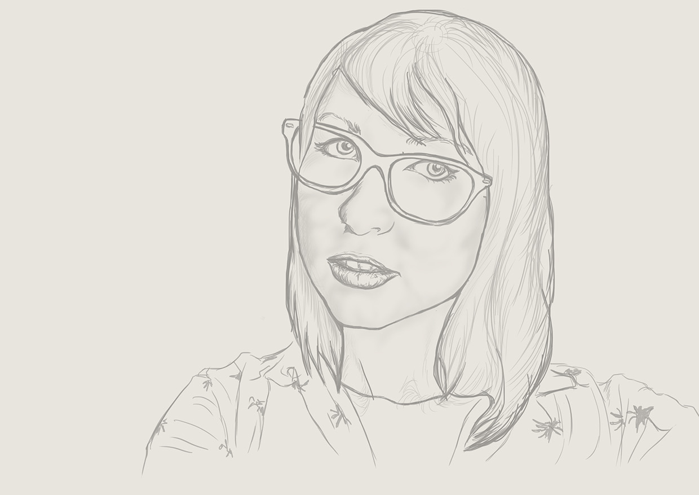
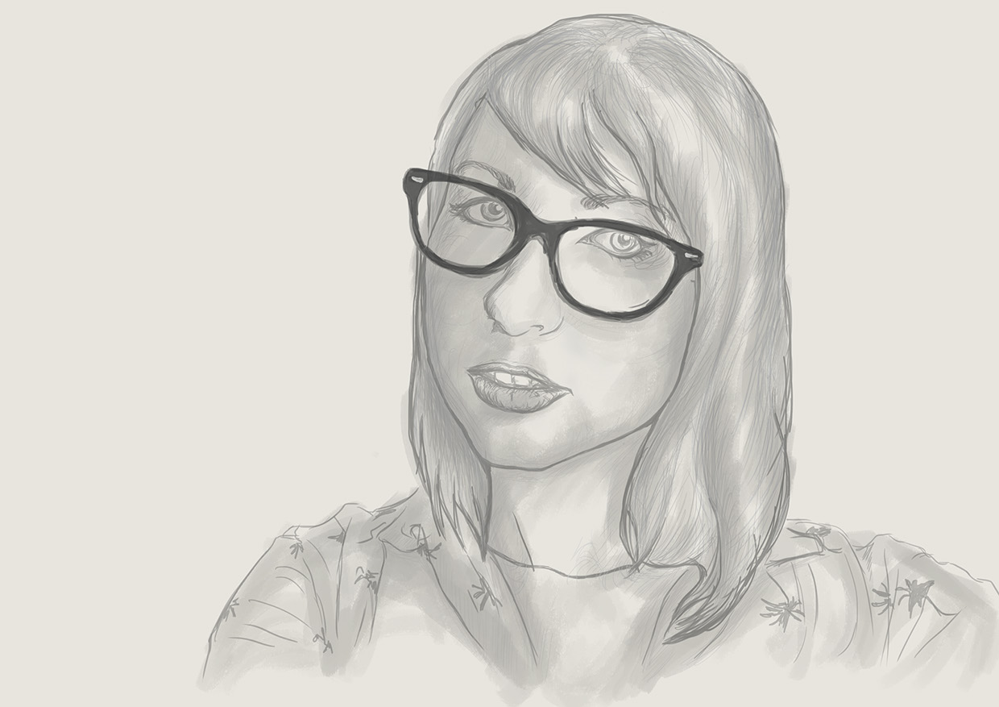
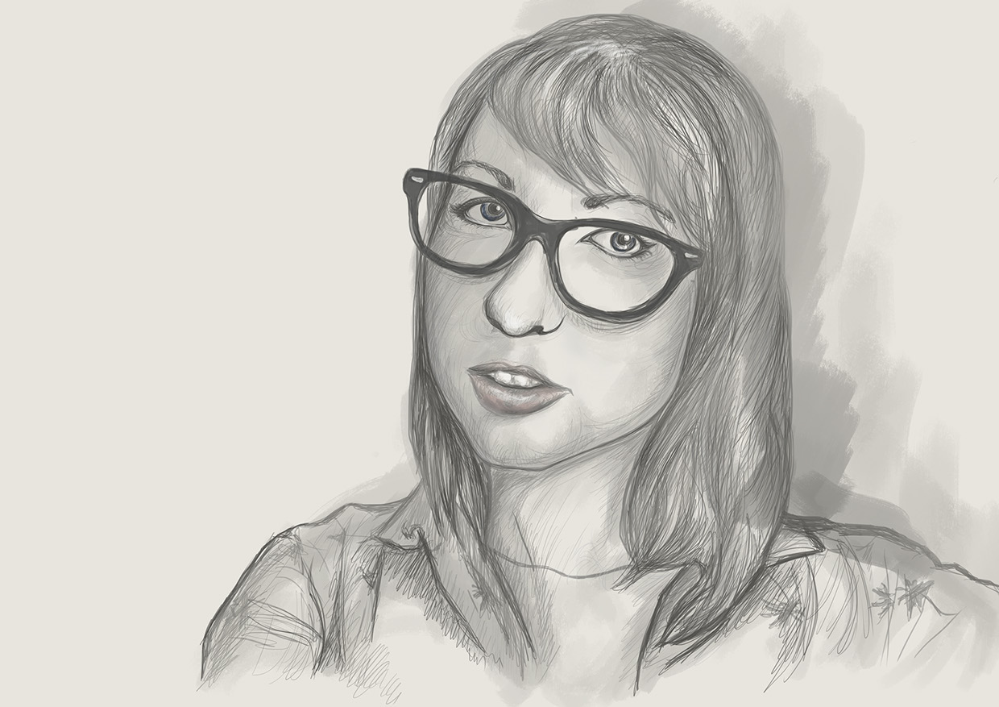

Self-Portrait
This is a sketch I recently did using Photoshop and my Wacom Intuos Pro from start to finish. I usually do the linework for portraits manually with pencils and graphic pens, so this was a fun and challenging thing to try out.
  